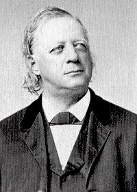
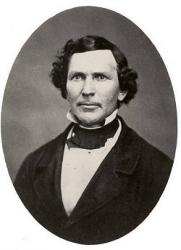

|
|
|
|
1 Must Jesus bear the cross alone 2 The consecrated cross I'll bear 3 Upon the crystal pavement, down 4 O precious cross! O glorious crown! |
484岂独主背十架
1.岂独救主背十字架，世人竟都得脱？
须知有架给每个人，也有一架给我。 2.成圣之架我甘愿背，直到死日方脱； 终归天家得戴冠冕，因有冠冕赐我。 3.走到天堂水晶映路，向主宝座前行； 乐将金冕放主脚下，赞主可爱荣名。 |
|
https://www.mred365.cn/szxg/7487.html
|
|
|
|
|
-

TJC讚美詩_296(B) 豈能讓主獨背十架 https://youtu.be/Nl_0iZWrwL4 -
Must Jesus Bear the Cross Alone | Fountainview Academy | https://youtu.be/uj_mOrYvSjw -
https://youtu.be/qdTJHoXHiHk
| Text: | Must Jesus Bear the Cross Alone |
| Author: | Thomas Shepherd |
| Tune: | MAITLAND |
| Short Name: | Thomas Shepherd |
| Full Name: | Shepherd, Thomas, 1665-1739 |
| Birth Year: | 1665 |
| Death Year: | 1739 |
Shepherd, Thomas, son of William Shepherd, sometime Vicar of Tilbrook, Bedfordshire, and subsequently a Nonconformist Minister at Oundle, and at Kettering, was born in 1665. Taking Holy Orders he held for some time preferment in Huntingdonshire, and in Buckinghamshire. Seceding from the Church of England, he became, in 1694, pastor of the Castle Hill Meeting House (Independent), Nottingham, of which Dr. Doddridge was subsequently pastor. In 1700 he removed to Bocking, near Braintree, Essex, where he began his work in a barn. A chapel was erected for his congregation in 1707. He died Jan. 29, 1739. His publications consisted chiefly of Sermons, His Penitential Cries were a continuance of those by John Mason, who wrote the first six and the version of Ps. 86, and were published with Mason's Songs of Praise in 1693. It must be noted that in D. Sedgwick's reprint of the Songs, and the Penitential Cries, in 1859, Mason's Cries are under the head of Songs, &c, pp. 49-61, and those under Penitential Cries, are all by Shepherd. Some of these Cries are still in common use including, "My God, my God, my Light, my Love " (Longing for God) ; and "When wilt Thou come unto me, Lord" (Communion with God desired).
-- John Julian, Dictionary of Hymnology (1907)
Notes
Must Jesus
bear the cross alone? [No Cross no Crown.] This
hymn is found in the following forms:—
1. In 3 stanzas of 4 lines in H. W. Beecher's Plymouth
Collection, 1855, No. 770, where it is signed "G. N. Allen."
American authorities inform us that this was taken from G. N.
Allen's collection The Social and Sabbath Hymn Book,
1849. In this form stanza i. is altered from T. Shepherd's Penitential
Cries, 1693, No. 23, stanza iii., and stanza ii. is found in a
missionary collection published at Norwich (England), circa 1810. To
these three stanzas three others were added in the Plymouth
Collection, which are ascribed to the editor's brother, C.
Beecher (p. 125, ii.).

Henry W. Beecher 1813–1887
2. In the American Meth. Episcopal Hymnal,
1878, the 3 stanzas from Allen's collection as above are given as by
"Thomas Shepherd, alt." G. N. Allen was born in 1812, and died in
1877.
3. In the Oberlin Manual of Praise, 1880, No.
416 is composed of 4 stanzas, of which stanza ii. is unknown to the Plymouth
Collection
--John Julian, Dictionary of Hymnology, Appendix, Part II (1907)
|
Title: |
MAITLAND (Allen) |
| Composer (attributed to): | George Nelson Allen (1844) |
| Meter: | 8.6.8.6 |
| Incipit: | 34551 32161 65513 |
| Key: | A♭ Major |
| Source: | "Western melody" in Henry Ward Beecher's Plymouth Collection, 1855 |
| Copyright: | Public Domain |
| Short Name: | George Nelson Allen |
| Full Name: | Allen, George Nelson, 1812-1877 |
| Birth Year: | 1812 |
| Death Year: | 1877 |
George Nelson Allen (1812-1871),

studied at Western Reserve Academy in Hudson, Oh OH and with Lowell Mason in Boston. Allen gave a strong musical foundation to Oberlin College in its earliest years; in addition to being Professor of Music he also served as Professor of Geology and Natural History, Secretary and Treasurer. In 1835 he compiled The Oberlin Social and Sabbath Hymn Book, in which appeared his most well known tune MAITLAND (also known as CROSS AND CROWN or WESTERN MELODY) with the text "Must Jesus bear the cross alone?". This was adapted by Thomas A. Dorsey in 1938 for his hymn "Precious Lord, take my hand". hand." He composed anthems and wrote some additional music for Isaac Woodbury's Oratorio "Absalom." He compiled a small 3" x 4" hymnal that every student should keep in his pocket that went through several printings.
Mary Louise VanDyke
Notes
PRECIOUS LORD, the tune Thomas Dorsey used for his most beloved hymn, "Precious Lord, take my hand", is an adaptation of MAITLAND. Sometimes Dorsey is shown as the composer, sometimes as the arranger or adapter the tune. MAITLAND is often attributed to Allen, but the earliest known sources (H.W. Beecher'sPlymouth Collection, 1855; Leonard Bacon's Church Music, 1855) show that Allen was the author/adapter of the text "Must Jesus bear the cross alone," not the composer of the tune. The tune itself was printed without attribution for many years. MAITLAND is also sometimes attributed to the Oberlin Social and Sabbath School Hymn Book, which Allen edited, but this collection did not contain music. This tune originally appeared in hymnals and tune books as CROSS AND CROWN; the name MAITLAND appeared as early as 1859.
简介（一） （来源：《岁首到年终》）
岂独主背十架
Must Jesus Bear the Cross Alone
《岁首到年终》
Thomas Shepherd, 1665-1739
耶稣对门徒说，若有人要跟从我，就当舍己，背起他的十字架，来跟从我。（太 16:24）
难道耶稣要独自背十字架吗？又有谁愿意作古利奈人西门呢？
赎罪的十架，必须要耶稣单独自己背。救赎之功上，我们不能加添什么，虽然在各各他的路程中，有西门代替耶稣背十字架，但在救赎之功上也没有任何功劳可言。当人类领悟到，在救赎之功上，我们不能作什么，在救赎的事上，我的帮助反而成了拦阻，我只能相信而感谢！这样，才能领会救赎的恩典和十字架的大能。是的，任何人皆不能背耶稣的十字架。
但是我们也有自己的十字架，就是神要放在我们肩膀上要我们背的（太 10:38）。十字架是痛苦，但不是所有的苦都是十字架，真正的十字架是指为主的缘故，为神的国度而遭受的逼迫或痛苦，这种十字架在永�琩膜~被记念。
这首「岂独主背十架」一般公认为乃几世纪以来由多人提供著作的。到了第 17 世纪再由英国反国教的传道人 Thomas Shepherd 将之编入于 1693 年其出版之 Penitential Cries 内。
作曲者 George Nelson Allen 系 Oberlin 大学的音乐教授，1844 年将该诗配曲并收集于所着的 Oberlin Social and Sabbath School Hymn Book 圣诗本中。
1 岂能让主独背十架，世人竟得安详？
信徒都当背负十架，当以主为榜样。
2 我愿献身背我十架，一生总不舍下，
忠心到底直到天家，主必亲自接纳。
3 荣耀宝架荣耀冠冕！荣耀的复活日！
天使前来接我升天，在彼永享安息。
＊那拒绝接受十字架的人得着甚么益处呢？ 他们乃是增加了十字架的重量。── 亚丰索
奔向標杆
My Task
愛你的鄰舍日日更加多，協助迷失羊羔歸回正路，
不斷的禱告默想主尊貴，笑送夕陽落霞，
歡迎晚幕垂下，奔向標杆。
遵行真理如在暗中思明，由早到晚盡力為主使用，
竭力保守主榮在我心�堙A笑答恩主呼召，
歡迎為主奔跑，直往前行。
有一日與主在空中相遇，憑著信心完成一切事工，
將自己一切獻在主面前，在新耶路撒冷，
在那新天新地，接受冠冕。
 (請點耳機收聽)
(請點耳機收聽)
這首詩歌告訴我們，要向「愛人和遵主真理」的標杆直跑。 第一、二節是雷沐德（Maude
Louise Ray）所作，第三節是畢克普牧師（F. H. Pickup）所作。 艾許福（E. L. Ashford）譜曲。 他們的生平都不詳。
另有一首「我的負擔」，英文歌名也是（My Task）是史奧華（Oswald J. Smith,見一月十一日）作詞，柯友勤
（Eugene L. Clark, 見二月廿日）譜曲。
歌詞如下：
我要背主耶穌十架，我樂意每日冒死；
若我能傳揚這故事：救主從天上降世。
主命我去傳揚福音，凡我腳蹤所到處；
使世界得聞這故事，卸罪擔得蒙救贖。
千萬人未聽聞福音，千萬人不知主名；
我必需對他們傳講，免得我受主責備。
（副歌）
我要傳揚這快樂福音，到各處黑暗地方；
對人人為主作見證，指引罪人得亮光。
(請點耳機收聽)
這二首詩歌合起來，是每一個基督徒應有的使命，讓我們謹記而遵行，甘願背負十架。 走筆至此，憶及許多聖詩集中都有一首古老的詩歌，「豈能讓主獨背十字架？」（Must
Jesus Bear the Cross Alone？）其歌詞如下：
豈能讓主獨背十架，世人竟得安祥？
信徒都當背負十架，當以主為榜樣。
我願獻身背我十架，一生總不捨下，
忠心到底直到天家，主必親自接納。
榮耀寶架榮耀冠冕！榮耀的復活日！
天使前來接我升天，在彼永享安息。
這首詩的作者是謝伯達（Thomas Shepherd,
1665-1739）在1693年所作，在當年是一首非常受歡迎的聖詩。謝伯達和他的父親都是英國非國教的牧師，後來謝伯達退出聖公會，他開始在窮鄉僻壤的一穀倉中講道；七年後，他們才蓋了一間小教堂。
謝伯達習慣在講道結束時，唱一首反省的歌。
他寫這首詩用來回應他的講題，原作是豈能讓西門獨背十字架，後來約翰衛斯理將「西門」改成「主」。目前詩集都採用美國作曲家艾倫（George Nelson
Allen, 1812-1877）在1844年的曲譜。
中英文聖詩集參考
英文歌名 My
Task
聖詩 151
讚美 426
青年聖歌III 87
英文歌名 My
Task -Smith
校園詩歌I
231A
英文歌名 Must
Jesus Bear the Cross Alone?
頌主新歌(中英雙語) 482
讚美詩(新編) 338
History of Hymns: "Must Jesus Bear the Cross Alone"
BY C. MICHAEL HAWN"Must Jesus Bear the Cross Alone"
by Thomas Shepherd
The United Methodist Hymnal, No. 424
Must Jesus bear the cross alone,
and all the world go free?
No, there's a cross for everyone,
and there's a cross for me.
Thomas Shepherd (1665-1739) tied his original poem to Simon of Cyrene who, according to Matthew 27:32, was compelled to carry Jesus' cross on the way to Golgotha. The original hymn reads,
Must Simon bear the cross alone,
And other saints be free?
Each saint of thine shall find his own
And there is one for me.
Whene'er it falls unto my lot,
Let it not drive me from
My God, let me ne'er be forgot
‘Till though hast lov'd me home.
Shepherd's poem appeared in a collection entitled Penitential Cries (1693), a collection of thirty-two hymns that was authored by John Mason (1646?-1694). The subtitle states that the collection was "Begun by the author of the Songs of praise and Midnight cry; and carried on by another hand." The "other hand" was apparently Thomas Shepherd. His hymn appears as number III under section "XXIX. For Universal Obedience" in the thirteenth edition (1735) available to this writer. What we have in our hymnal appears to be highly modified over centuries to such a degree that Shepherd might be considered the inspiration for the hymn rather than the author.
Stanza two appears to be originally from a collection of missionary hymns published in Norwich, England, in the early nineteenth century (c. 1810) by an unknown author. According to information supplied by Methodist hymnologist Fred Gealy, stanzas two and three appear in The Oberlin Social and Sabbath School Hymn Book, compiled by George N. Allen, from the mid-nineteenth century (between 1844 and 1849). The version used in most hymnals is taken without alteration from a collection prepared by the famous congregational minister and social reformer Henry Ward Beecher (1813-1887) entitled Plymouth Collection of Hymns (1835).
Beecher's Collection includes two additional stanzas (four and five):
Upon the crystal pavement down
At Jesus' piercèd feet,
Joyful I'll cast my golden crown
And His dear Name repeat.
O precious cross! O glorious crown!
O resurrection day!
When Christ the Lord from Heav'n comes down
And bears my soul away.
The second stanza is reminiscent of "When I survey the wondrous cross" (1707) by the famous hymn writer Isaac Watts. In stanza three, Watts writes:
See, from his head, his hands, his feet,
sorrow and love flow mingled down.
Did e'er such love and sorrow meet,
or thorns compose so rich a crown?
The author(s) of stanza two of "Must Jesus bear the cross," dated roughly a century later would undoubted have known Watts' hymn. Whether intentionally or subconsciously, Watts' hymn may have influenced this stanza:
How happy are the saints above,
who once went sorrowing here!
But now they taste unmingled love,
and joy without a tear.
Watts' stanza was a reflection on the suffering cross where "love flowed mingled down." Because of Christ's death, the saints are able to "taste unmingled love."
Thomas Shepherd served as Vicar of Tilbrook, Bedfordshire, and then a nonconformist parish at Oundle, and at Kettering. Though he took Holy Orders and served for a time in Huntingdonshire and in Buckinghamshire, he seceded from the Church of England, and became pastor of the Castle Hill Meeting House (Independent), Nottingham in 1694. He moved to Bocking, near Braintree, Essex, where he began a parish in a barn in 1700. The congregation erected a chapel in 1707, and Shepherd remained with this church until the end of his life. More than thirty of his hymns appear in eighteenth and nineteenth-century hymnals, but none with near the popularity of the hymn he apparently inspired.
The tune MAITLAND was composed for this text by George N. Allen (1812-1877) and appeared with the text in his Oberlin Social and Sabbath School Hymn Book. It is interesting to speculate if the text and the tune influenced Thomas A. Dorsey's hymn, "Precious Lord, take my hand" (1932). Dorsey (1899-1965) wrote his hymn out of great personal family loss, a theme consistent with Shepherd's adapted and amended text. Dorsey's melody, PRECIOUS LORD, is almost identical to MAITLAND except for slight modifications in measures five and six and the change from 6/4 to 3/4 meter. Dorsey's harmonization as presented in The United Methodist Hymnal (No. 474) reflects more of the chromatic harmonies that were a part of the African American experience rather than the simpler chords of George Allen commonly found in the hymn tunes of the famous American educator and composer Lowell Mason (1792-1872).
Dr. Hawn is distinguished professor of church music at Perkins School of Theology. He is also director of the seminary's sacred music program.
https://www.umcdiscipleship.org/resources/history-of-hymns-must-jesus-bear-the-cross-alone-1
Words: Thomas Shepherd (b. _____, 1665; d. Jan. 29,
1739)
Music: Maitland, by George Nelson Allen (b. Sept. 7,
1812; d. Dec. 9, 1877)
Links:
Wordwise Hymns
The Cyber
Hymnal
Note: This is a hymn with a very mixed (and in some parts an uncertain) origin. We know that Thomas Shepherd wrote a version of CH-1, but the rest is not likely his work. Stanzas CH-2 to 5 have been variously credited: to an anonymous author, to George Allen the composer of the tune, to clergyman Henry Ward Beecher, or to his brother Charles. (Harriet Beecher Stowe, who wrote the beautiful hymn Still, Still with Thee, and the anti-slavery novel Uncle Tom’s Cabin, was their sister.) Of the five stanzas given in the Cyber Hymnal, most hymn books now omit CH-2.
The first stanza was published in 1693, by Thomas Shepherd. The Petersens, in their volume The Complete Book of Hymns, suggest he wrote it to go with a sermon about Peter. I’ve seen no evidence of that elsewhere, but his original beginning of the hymn did deal with “Simon,” not Jesus. Was he thinking of the tradition that Peter was crucified? The lines of verse were included in a book called Penitential Cries. There Shepherd wrote:
Shall Simon bear the cross alone,
And other saints be free?
Each saint of Thine shall find his own,
And there is one for me.
In The Hymns and Hymn Writers of the Church, by Nutter and Tillett (published in 1911), the opening line of Shepherd’s original is given as: “Must Simon bear Thy cross alone.” That puts things in quite a different light. If the word “Thy” is authentic, it would seem to be a reference to Simon of Cyrene, whom the Romans “compelled” (forced) to carry the cross of Jesus partway to Calvary (Mk. 15:21).
This may simply be a typographical error in Nutter and Tillett’s published work. But if not, Simon of Cyrene certainly doesn’t provide an example of voluntary cross bearing! Further, there is a vast difference between the cross of Christ and all others. Though Simon was conscripted by the Romans to assist the Lord along the way, no one could do what Jesus did for us.
The Lord Jesus told His followers to take up “your cross” (Matt. 16:24; Mk. 8:34; Lk. 9:23). It was never, “Take up My cross.” The cross of Christ pertains to our redemption, and He alone can be the world’s Redeemer (Eph. 1:7; I Pet. 1:18-19). In the early church, the cross believers had to bear may have been literal. But Christ’s statements are also meant as a metaphor or symbol of our identification with Him and with the cause of the gospel, a picture of self sacrifice and complete surrender to God’s will.
It’s not known what later editor amended the first stanza to its present form, but it better suggests this important distinction.
CH-1) Must Jesus bear the cross alone,
And all the world go free?
No, there’s a cross for everyone,
And there’s a cross for me.
CH-3) The consecrated cross I’ll bear
Till death shall set me free;
And then go home my crown to wear,
For there’s a crown for me.
Jesus said, “In the world you will have tribulation” (Jn. 16:33). The solemn fact was reiterated by the Apostle Paul: “All who desire to live godly in Christ Jesus will suffer persecution” (II Tim. 3:12). As Isaac Watts put it, “Is this vile world a friend to grace?” The answer is no. And around the same time William Penn wrote:
No pain, no palm;
No thorns, no throne;
No gall, no glory;
No cross, no crown.
Questions:
1) Do you think we in North America truly understand the concept of
cross bearing? If not, why not?
2) How is this concept related to Romans 12:1?
"MUST JESUS BEAR THE CROSS
ALONE?"
"If any man come after Me, let him deny himself, and take up his cross, and
follow Me" (Matt. 16.24)
INTRO.: A hymn which encourages us to take up the cross and follow Jesus is "Must Jesus Bear The Cross Alone?" (#286 in Hymns for Worship Revised and #300 in Sacred Selections for the Church). The text is usually attributed to Thomas Shepherd, who was born somewhere in England in 1665, the son of William Shepherd. A minister in the Church of England who left to become minister of the independent Castle Hill Meeting House in Nottingham, where hymn writer Philip Doddridge would later preach, he published several poems in 1693 under the title, Penitential Cries. The first stanza is an alteration of one of those poems which originally began, "Shall Simon bear the Cross alone, And other Saints be free? Each Saint of thine shall find his own, And there is one for me."
In 1700, Shepherd moved to Bocking, near Braintree, where he preached in a barn for seven years, after which a small chapel was erected for the congregation, and remained there until his death on Jan. 29, 1739. The development of this hymn to its present form is somewhat obscure and complex. Most of the other stanzas are anonymous and seem to date from a missionary hymn collection published at Norwich, England, around 1810. The final stanza appears to have been penned by the composer who is generally credited with the tune (Maitland or Cross and Crown), George Nelson Allen (1812-1877). A native of Manfield, MA, he graduated from Oberlin College in Oberlin, OH, in 1838, and remained to teach music there.
In 1844, Allen compiled The Oberlin Social And Sabbath Hymn Book, which included this song. However, the melody may have actually been arranged from an earlier work, since Henry Ward Beecher’s Plymouth Collection of 1855 identifies it simply as a "Western Melody," and other books attribute it to an Aaron Chapin, perhaps a reference to Amzi Chapin, who with his brother Lucius, lived in Kentucky and taught music in the late 1700s. It was also Allen who apparently altered Shepherd’s original stanza to its present form. He retired from Oberlin in 1864 and moved to Cincinnati, OH, where he died. However, his work as a music educator laid the foundation for the establishment of the Oberlin Conservatory of Music in 1865. The current form of "Must Jesus Bear the Cross Alone" is taken from Beecher’s collection.
Among hymnbooks published by members of the Lord’s church during the twentieth century for use in churches of Christ, the song appeared in the 1921 Great Songs of the Church (No. 1) and the 1937 Great Songs of the Church No. 2 both edited by E. L. Jorgenson; the 1935 Christian Hymns (No. 1), the 1948 Christian Hymns No. 2, and the 1966 Christian Hymns No. 3 all edited by L. O. Sanderson; the 1940 Complete Christian Hymnal edited by Marion Davis; the 1963 Abiding Hymns edited by Robert C. Welch; and the 1963 Christian Hymnal edited by J. Nelson Slater. Today it may be found in the 1971 Songs of the Church, the 1990 Songs of the Church 21st C. Ed., and the 1994 Songs of Faith and Praise all edited by Alton H. Howard; the 1978/1983 Church Gospel Songs and Hymns edited by V. E. Howard; the 1986 Great Songs Revised edited by Forrest M. McCann; and the 1992 Praise for the Lord edited by John P. Wiegand; in addition to Hymns for Worship, Sacred Selections, and the 2007 Sacred Songs of the Church edited by William D. Jeffcoat.
This is a widely-known song of consecration.
I. From stanza 1 we learn that there is a cross for everyone to bear
"Must Jesus bear the cross alone, And all the world go free?
No, there’s a cross for every one, And there’s a cross for me."
A. It appears that at first Jesus bore His cross alone: Jn. 19.15-17
B. However, for some reason (some think that it was because Jesus was just
too weak to bear its weight), a man named Simon was compelled to bear it:
Matt. 27.32, Mk. 15.21, Lk. 23.26
C. Just as Jesus bore the cross and went to Calvary for us, He teaches that
we must bear our cross of responsibility to Him: Lk. 9.23
II. From stanza 2 we learn that the cross bearing of Jesus is our example
"Disowned on earth, ‘mid grief and cares, He led His toilsome way;
But now in heaven a crown He wears, And reigns in endless day."
A. In addition to His bearing the cross, the entire life of Jesus was one
of grief and care: Isa. 43:3-4
B. However, in His life of suffering, He led the way and became our
example: 1 Pet. 2:21-22
C. In so doing, He gives hope to all who follow Him that they too can wear
a crown with Him because He led the way: Heb. 12.1-2
III. From stanza 3 we learn that there are others who have borne their
crosses too
"How happy are the saints above, Who once went sorrowing here;
But now they taste unmingled love, And joy without a tear."
A. The saints above, now in the Hadean realm, are those who once went
sorrowing here, many of them even giving up their lives for their faith:
Rev. 6.9
B. However, those who have already borne their crosses now have rest and
dwell in a place of joy and love: Rev. 14.13
C. Their example encourages us that if they could do it, we can do it too
and have the hope of dwelling with them in the presence of the Lord: Rev.
22.1-3
IV. From stanza 4 we learn that we must follow their example in bearing the
cross
"The consecrated cross I’ll bear, Till He [death] shall set me free,
And then go home my crown to wear, For there’s a crown for me."
A. Bearing the cross implies the idea of being crucified to the world: Gal.
6.14
B. And this we must do till He shall set us free in death: Heb. 9:27
C. Also, this is the only way that we can have the hope of gaining the
crown of reward that Christ promises the faithful: Jas. 1.12, Rev. 2.10
V. From stanza 5 we learn that the cross-bearing will lead to a reward
"Upon the crystal pavement, down At Jesus’ blessed feet,
Joyful, I’ll cast my golden crown, And His dear name repeat."
A. The stanza draws upon the figurative language of Revelation in picturing
the throne of God as being surrounded by a sea of glass like crystal: Rev.
4.6
B. Those who bear their crosses in this life will be among that number who
can cast their crowns at the Lord’s feet: Rev. 4.19
C. These are then pictured as ascribing eternal paise and glory to Christ:
Rev. 5.8-10
VI. From stanza 6, we learn that the ultimate reward for bearing our cross
is that crown of eternal life
"O precious cross, O glorious crown, O resurrection day;
Ye angels of the stars come down And bear my soul away."
A. At death, the angels bear away the souls of God’s faithful: Lk. 16.22
B. From then on, the souls of the righteous await the resurrection day: 1
Thes. 4.14-17
C. And when that time comes, we shall exchange the cross for a glorious
crown, even as the apostle Paul hoped: 2 Tim. 4.6-8
CONCL.:
The scriptural qualifications for being a true disciple of Jesus Christ are quite clear. They include denying ourselves, taking up the cross, and following Him. This cross represents whatever responsibilities and hardships that we must face in this life as we strive to live for the Lord. This hymn challenges us to make our commitment to take up the cross. Since Jesus endured His cross for us, each one of should ask himself, "Must Jesus Bear The Cross Alone?"
https://hymnstudiesblog.wordpress.com/2008/09/18/quotmust-jesus-bear-the-cross-alonequot/
Must Jesus bear the cross alone hymnologyarchive
adapted from
Lord, Thou hast planted me a vine
Must Simon bear his cross alone
How happy are the saints above
with
CROSS AND CROWN
MAITLAND
I. Text: Origins
The hymn “Must Jesus bear the cross alone” has a long, complex history with multiple influences and variants. The oldest form of this text appeared in Penitential Cries (London: Thomas Parkhurst, 1693), a collection started by John Mason (ca. 1845–1694) and finished by Thomas Shepherd (1665–1739). In this collection, Mason is credited only with the first six hymns and a paraphrase of Psalm 86; the rest are by Shepherd.[1] The key text is “Lord, Thou hast planted me a vine,” by Shepherd, where the third stanza reads “Shall Simon bear thy cross alone” (Fig. 1).
Fig. 1. Penitential Cries (1693).
II. Text: First Adaptation
Shepherd’s hymn was not printed in American hymnals until almost one hundred years later, when it appeared in The Christian’s Duty (Germantown: Peter Leibert, 1791). This text took on a new form when it was recast as “Must Simon bear his cross alone” in Second Advent Hymns, Designed to Be Used in Prayer & Camp Meetings (1842 | 1843 ed. shown in Fig. 2). This collection was printed in different forms by different publishers, including M.M. George in Lowell, Massachusetts, A.R. Brown in Exeter, New Hampshire, and Joshua V. Himes (1805–1895) in Boston. The 1842 Himes edition, curiously, did not include this hymn; Himes introduced it into his own collections in a different form the following year.
Fig. 2. Second Advent Hymns, Designed to Be Used in Prayer & Camp Meetings (Concord, N.H.: A.R. Brown, 1843).
In this collection, published without music, the text was in three stanzas of four lines (8.6.8.6.). The first stanza is clearly an adaptation of Shepherd’s stanza “Shall Simon bear thy cross alone.” The second stanza, “How happy are the saints above,” appeared as early as 1806 in Hymns and Spiritual Songs, for the Use of Christians, 8th ed., enlarged (Philadelphia: Jacob Johnson, 1806 | Fig. 3), unattributed. The third stanza, “We’ll bear the consecrated cross,” has not been traced any earlier than Second Advent Hymns; the author is unknown.
Fig. 3. Hymns and Spiritual Songs, for the Use of Christians, 8th ed., enlarged (Philadelphia: Jacob Johnson, 1806).
III. Text: Second Adaptation
The Second Advent version of the hymn (Fig. 2) was published three times by Joshua V. Himes in 1843, but greatly expanded. One example appeared in Signs of the Times and Expositor of Prophecy, vol. 5, no. 12 (24 May 1843 | Fig. 4), p. 91, in four stanzas, headed “The cross and crown,” intended for a melody described as “The rose that all are praising.” Himes was one of the editors of the periodical. In this version, the three stanzas from Second Advent were extended from four lines to eight. An additional fourth stanza, “The church has heard the midnight cry,” seems to be without precedent and is probably by Himes. “The rose that all are praising” is a song by Thomas Haynes Bayly (1797–1837) (Baltimore: John Cole, n.d. | PDF).
Fig. 4. Signs of the Times and Expositor of Prophecy, vol. 5, no. 12 (24 May 1843, p. 91.
The hymn was also included in Joshua V. Himes’ Millennial Harp and Advent Meloodies (Boston, 1843 | Fig. 5). In this collection, which included the tune CROSS AND CROWN, the reason for the expansion of the each stanza to ten phrases (8.6.8.6.8.8.7.6.6.6.) is more clearly seen as a way to fill the tune (melody in the second voice). The melody bears a resemblance to Thomas Bayly’s “The rose that all are praising” (PDF), but it departs in many respects, in shape, in rhythm, and in length.

Fig. 5. Joshua V. Himes, Millennial Harp and Advent Melodies (Boston, 1843).
This printing was then repeated in Himes’ Millennial Harp, Improved Ed. (Boston, 1843), which was a compilation of three earlier collections: Millennial Harp, or Second Advent Hymns (1842), Millennial Harp and Advent Melodies (1843), and Millennial Musings (1841).
IV. Text: Third Adaptation
The Second Advent version of the hymn was altered as “Must Jesus bear the cross alone” in The Oberlin Social and Sabbath School Hymn Book (Oberlin: James M. Fitch, 1844; 1846 printing shown at Fig. 6), compiled by George N. Allen (1812–1877). Allen’s alterations were minimal, but notable. The first line shifted the burden of the cross from Simon to Jesus. The third stanza was changed from plural (“we”) to singular (“I”).
Fig. 6. George N. Allen, The Oberlin Social and Sabbath School Hymn Book (Oberlin: James M. Fitch, 1846).
Allen’s version of the hymn, therefore, should be credited to Thomas Shepherd, 1693 (st. 1), Hymns & Spiritual Songs, 8th ed., 1806 (st. 2), Second Advent Hymns, 1842 (st. 3), altered by G.N. Allen.
V. Text: Additional Stanzas
Allen’s version of the hymn later appeared in Henry Ward Beecher’s Plymouth Collection of Hymns and Tunes (NY: A.S. Barnes, 1855 | Fig. 7). Beecher’s edition included three additional stanzas beginning “Upon the crystal pavement down.” These appeared without attribution but have been credited to Charles Beecher (1815–1900), Henry’s brother. Like Himes, Beecher named the melody CROSS AND CROWN, but this tune is completely different and should not be equated with the other.
Fig. 7. Henry Ward Beecher, Plymouth Collection of Hymns and Tunes (NY: A.S. Barnes, 1855).
VI. Tune
The Plymouth Collection was significant for pairing Allen’s text “Must Jesus bear the cross alone” with this tune, which would later be known as MAITLAND. For a fuller discussion of the origins of this tune, see “Precious Lord, take my hand.”
by CHRIS FENNER
for Hymnology Archive
5 February 2019
Footnotes:
-
John Julian, “Thomas Shepherd,” A Dictionary of Hymnology (London, 1892), pp. 1054–1055.
Related Resources:
Joshua V. Himes, Signs of the
Times and Expositor of Prophecy, vol. 5, no. 12 (24 May 1843),
p. 91:
https://m.egwwritings.org/en/book/1655.2739
Charles S. Nutter, “Must Jesus bear the cross alone,” Hymn Studies: An Illustrated and Annotated Edition of the Hymnal of the Methodist Episcopal Church (NY: Phillips & Hunt, 1884): Archive.org
“Must Jesus bear the cross alone,” A Dictionary of Hymnology, with Appendix, ed. John Julian (London, 1907), p. 1581.
Robert Guy McCutchan, “Must Jesus bear the cross alone,” Our Hymnody: A Manual of the Methodist Hymnal, 2nd ed. (Nashville: Abingdon-Cokesbury, 1942), pp. 313–314.
Fred D. Gealy & Austin C. Lovelace, “Must Jesus bear the cross alone,” Companion to the Hymnal (Nashville: Abingdon, 1970), pp. 287–289.
Paul G. Hammond, “Must Jesus bear the cross alone,” Handbook to the Baptist Hymnal (Nashville: Convention Press, 1992), pp. 190–191.
C. Michael Hawn, “Must Jesus bear the Cross alone,”
History of Hymns,
Discipleship Ministries, The United Methodist Church (20 Feb. 2014):
https://www.umcdiscipleship.org/resources/history-of-hymns-must-jesus-bear-the-cross-alone-1
Carlton R. Young, “Must Jesus bear the cross alone,” Canterbury
Dictionary of Hymnology:
http://www.hymnology.co.uk/m/must-jesus-bear-the-cross-alone
“Must Jesus bear the cross alone,” Hymnary.org:
https://hymnary.org/text/must_jesus_bear_the_cross_alone
“Must Simon bear his cross alone,” Hymnary.org:
https://hymnary.org/text/must_simon_bear_his_cross_alone
“Lord, thou hast planted me a vine,” Hymnary.org:
https://hymnary.org/text/lord_thou_hast_planted_me_a_vine
https://www.hymnologyarchive.com/must-jesus-bear-the-cross-alone